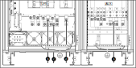
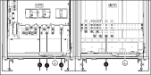

Connect the Power Cables in Bottom Cable Entry System with Bypass Transformer
-
Connect the power cables:
- Connect the bypass cables to the X301 (L1, L2, L3) terminals.
- Connect the input cables to the X001 (L1, L2, L3, N1) terminals.
- Connect the output cables to the X601 (3:3: L1, L2, L3, N)/(3:1 10–20 kVA: L, N))/(3:1 30–80 kVA: L1, L2) terminals.
- Connect the battery cables to the X201 (B+,B-) terminals.
Figure 1. Front View of the 10–40 kVA UPS and AUX Cabinet with Bypass Transformer — 3:3 
Figure 2. Front View of the 10–40 kVA UPS and AUX Cabinet with Bypass Transformer — 3:1 Figure 3. Front View of the 50–80 kVA UPS and AUX Cabinet with Bypass Transformer — 3:3 Figure 4. Front View of the 50–80 kVA UPS and AUX Cabinet with Bypass Transformer — 3:1 
1 No N if input transformer is installed